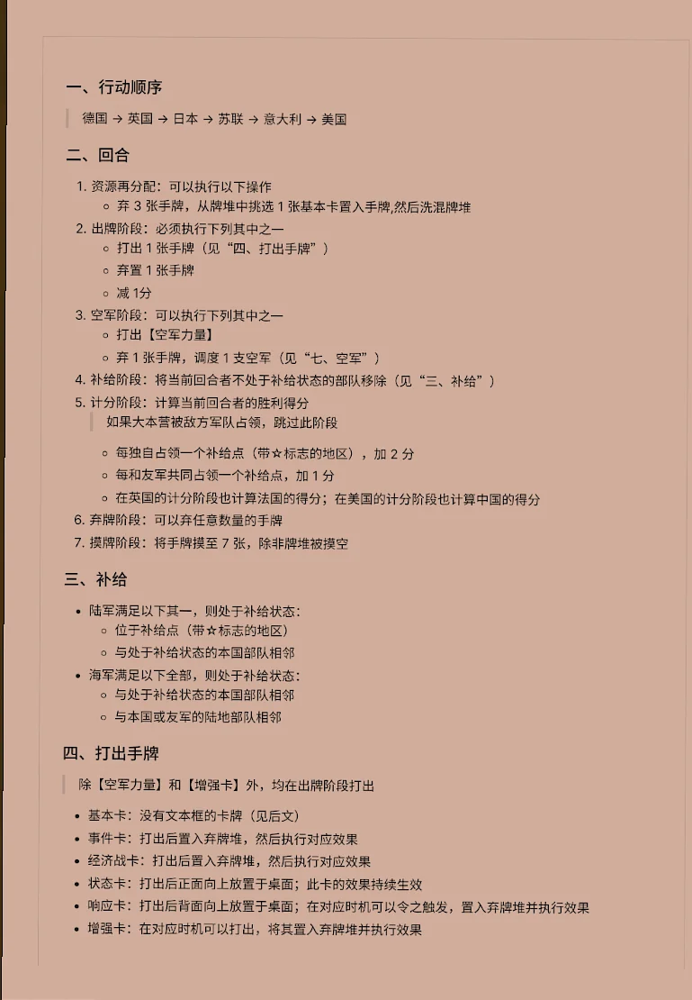
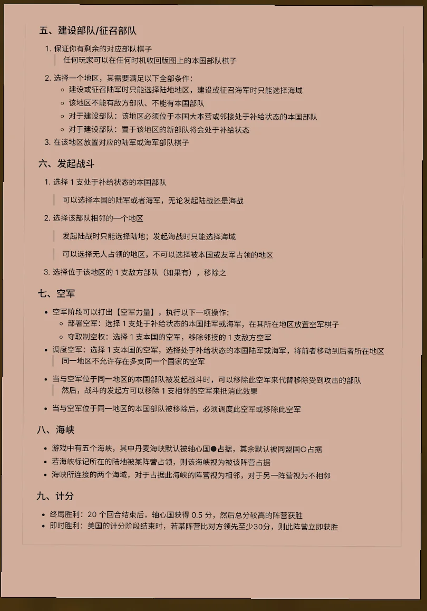
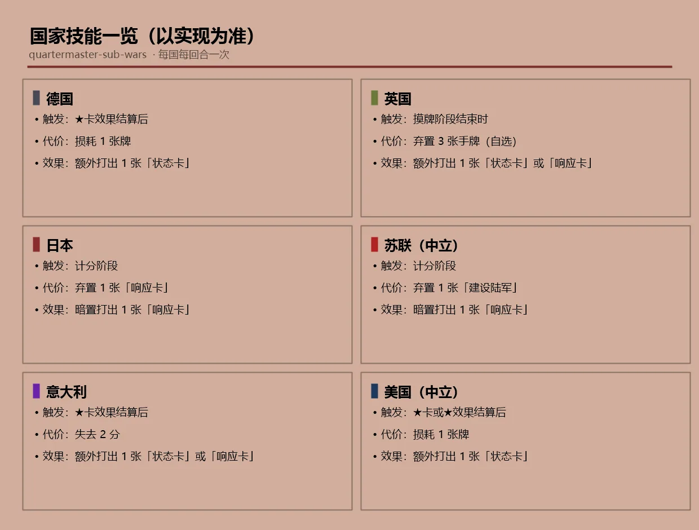
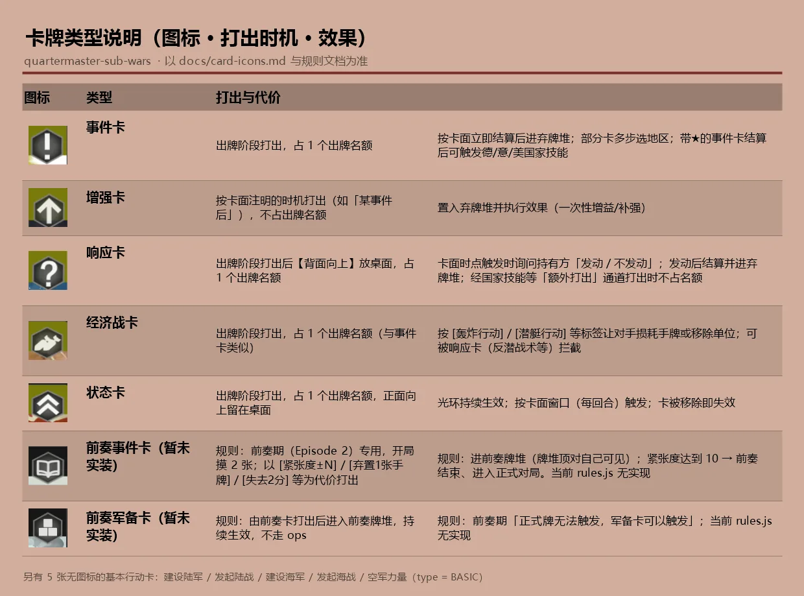
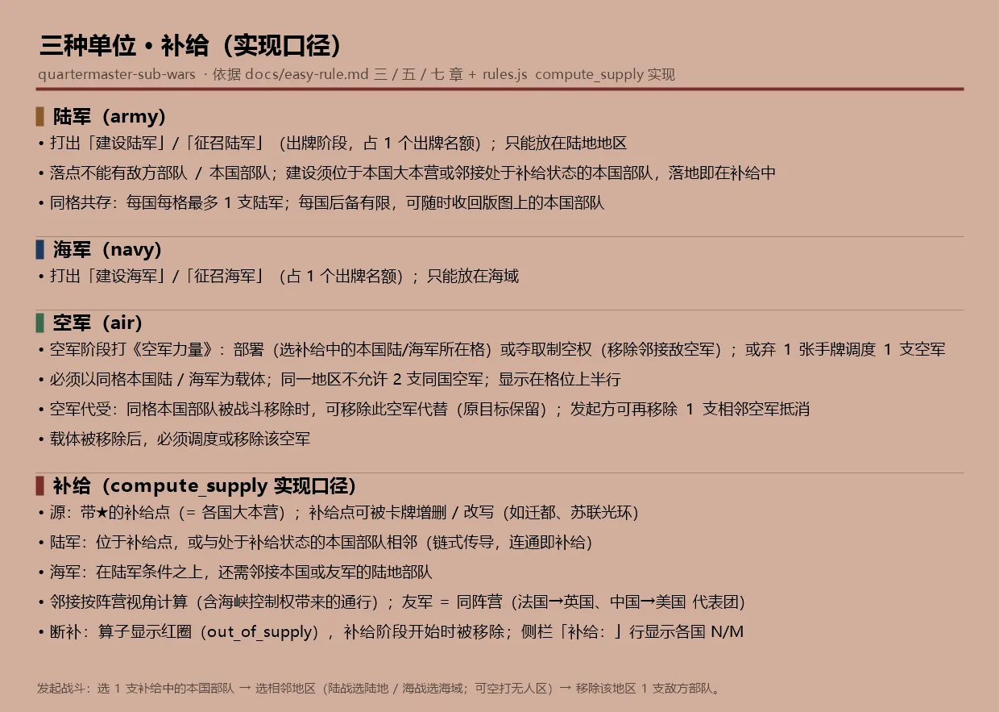
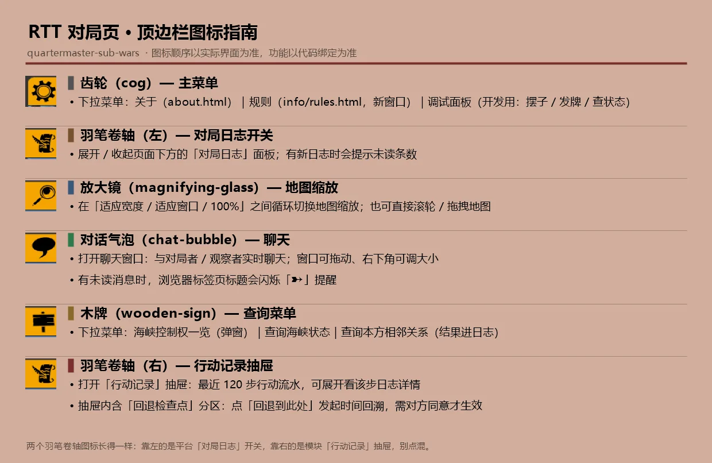
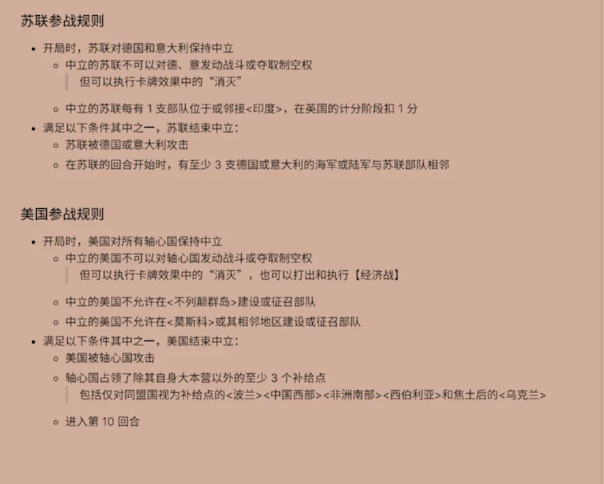

军需官 · 次要战场 — 简易规则
以下为规则书摘要图。完整牌面效果见对局内悬停预览。

一、行动顺序 · 二、回合 · 三、补给 · 四、打出手牌

五、建设部队/征召部队 · 六、发起战斗 · 七、空军 · 八、海峡 · 九、计分
附：对局内速查
以下 4 张为对局界面速查图，内容以当前实现为准；前奏（Episode 2）规则暂未实装，故未收录。

国家技能：德国 / 英国 / 日本 / 苏联（中立）/ 意大利 / 美国（中立）

卡牌类型：事件 / 增强 / 响应 / 经济战 / 状态 / 前奏事件 / 前奏军备

三种单位（陆军 / 海军 / 空军）与补给判定

顶边栏图标：齿轮 / 卷轴 / 放大镜 / 气泡 / 木牌 / 徽标

苏联参战规则 · 美国参战规则